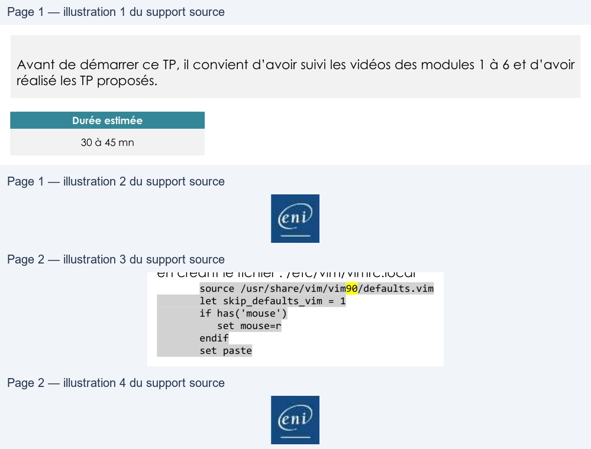

Module 06 — Gestion des paquets logiciels¶
La transcription du support Drive et l’aide pédagogique sont séparées pour rendre leur provenance explicite.
SOURCE DRIVE · TRANSCRIPTION DU SUPPORT
Le contenu des documents du dossier TSSR est transcrit ci-dessous, page par page. Les textes, tableaux et illustrations sont intégrés à la page Web ; aucun PDF ENI n’est diffusé par ce lecteur. Les versions et les consignes restent celles des supports de formation. Les compléments IA sont conservés dans leur onglet distinct.
Support · RES24_0050B - M06 - Linux Administration (Debian) · 29 pages transcrites
Page 1
Administration Debian
GNU/Linux
Module 06 – Gestion des paquets logiciels
Page 2
Gestion des paquets logiciels
Objectifs
• Comprendre les Releases du projet Debian
• Savoir gérer les fichiers des dépôts
• Mettre à jour la distribution
• Installer des paquets logiciels
Installer des nouveaux programmes sous Debian Linux
Texte relevé dans les illustrations
End
Page 3
Gestion des paquets logiciels
Les Branches Debian
Page 4
Les Branches Debian
Les Branches, ou releases, Debian
• 3 principales Branches, "release" en anglais. Stable, Testing,
Unstable.
• Stable : C'est la version de production de Debian, celle qu'il est recommandé
d'utiliser.
• Testing : La branche Testing contient la future version stable de Debian.
• Unstable : Version en constante évolution, (on parle de Rolling release).
La distribution Unstable est toujours appelée Sid
En production, nous utilisons principalement la branche Stable ou
antérieure

Page 5
Les Branches Debian
Les Branches, ou releases, Debian
• On peut également noter les branches suivantes :
• Old-Stable : C'est la version de production de Debian antérieure (R -1)
• Old-Old-Stable : C'est la version de production encore antérieure (R-2)
• Experimental : cas particulier, car elle ne contient pas tous les paquets
constituant une distribution complète. Elle contient des paquets de logiciels
en cours de développement.
Page 6
Gestion des paquets logiciels
Gestion des dépôts
Page 7
Gestion des dépôts
Les dépôts
• Les paquets logiciels, ainsi que leurs sources, sont disponibles sur
Internet dans des dépôts (repository).
• Lorsqu'une machine est installée, les dépôts officiels Debian sont
automatiquement configurés, en fonction de la version installée,
facilitant :
• La mise à jour de toute la distribution : la mise à jour pourra être une mise à
jour de sécurité ou une mise à jour complète du système et de la totalité
des paquets la composant ;
• L'installation de nouveaux paquets : il n'est pas nécessaire de chercher sur
Internet un site de téléchargement pour l’installation des paquets, le
gestionnaire de paquet s'en charge tout seul.
Page 8
Gestion des dépôts
Le fichier sources.list
Le fichier /etc/apt/sources.list contient la configuration des dépôts.
root@deb:~# vim /etc/apt/sources.list #deb cdrom:[Debian GNU/Linux 10.0 Buster Official amd64 NETINST ]/ buster main # dépot de base de la distribution deb http://ftp.fr.debian.org/debian/ buster main deb-src http://ftp.fr.debian.org/debian/ buster main # security updates – mise à jours de sécurité deb http://security.debian.org/ buster/updates main deb-src http://security.debian.org/ buster/updates main # buster-updates, previously known as 'volatile' deb http://ftp.fr.debian.org/debian/ buster-updates main deb-src http://ftp.fr.debian.org/debian/ buster-updates main
https://wiki.debian.org/fr/SourcesList
Texte relevé dans les illustrations
N

Page 9
Gestion des dépôts
Le fichier sources.list
deb http://ftp.fr.debian.org/debian/ bookworm main contrib
Le premier champ indique le type de paquet :
• deb : paquet binaire
• deb-src : paquet source
Le deuxième champ indique le type et le chemin de la source. Il peut
commencer par :
• http:// : site web de téléchargement ;
• ftp:// : site FTP de téléchargement ;
• file:// : répertoire local ;
• cdrom:[...] : suivi entre crochet du label du CD, indique un CD-ROM
ou DVD-ROM
Texte relevé dans les illustrations
eni
Page 10
Gestion des dépôts
Le fichier sources.list
deb http://ftp.fr.debian.org/debian/ bookworm main contrib
Le troisième champ spécifie la branche disponible : • oldstable : l'ancienne version stable • stable : la version officielle actuelle • bookworm, buster, … : une version spécifique, cela peut être la version officielle • testing : la prochaine version stable • unstable : c'est la version qui porte toujours le nom de Sid • experimental : il est préférable de la laisser aux développeurs
Texte relevé dans les illustrations
eni
Page 11
Gestion des dépôts
Le fichier sources.list
deb http://ftp.fr.debian.org/debian/ bookworm main contrib
Le quatrième champ et les suivants indiquent la section, dont
l'objectif est de filtrer les paquets à installer :
• main : les paquets Debian standards, ils sont tous libres ;
• contrib : ces paquets sont libres mais dépendants de paquets qui
ne le sont pas, ils présentent donc une dépendance vers non-free ;
• non-free : des paquets sous licence non libre
Il est également possible d’utiliser des fichiers sources indépendants
déposés dans le dossier /etc/apt/sources.list.d
Texte relevé dans les illustrations
D)
eni
Page 12
Gestion des dépôts
Démo
Gestion du fichier sources.list

Page 13
Gestion des paquets logiciels
Gestion courante des
paquets
Page 14
Gestion des dépôts
Gestion courante des paquets
• Les opérations de gestion de base des paquets sur les systèmes
Debian sont réalisées en ligne de commande à l'aide de deux outils
différents :
apt-get / apt-cache et apt
• Les opérations de recherche et de consultation pourront être réalisées
avec un compte d'utilisateur standard. Les opérations altérant le
système seront réalisées avec les privilèges du compte root.
Page 15
Gestion des dépôts
Les commandes courantes de gestion
• Mettre à jour la base de données des paquets disponibles
root@deb:~# apt update root@deb:~# apt-get update
• Mettre à jour la distribution sans supprimer de paquets
root@deb:~# apt upgrade root@deb:~# apt-get upgrade
• Mettre à jour la distribution avec éventuelle suppression de
paquets obsolètes
root@deb:~# apt full-upgrade root@deb:~# apt-get dist-upgrade
Page 16
Gestion des dépôts
Les commandes courantes de gestion
• Installer des paquets
root@deb:~# apt install paquet1 <paquet2> root@deb:~# apt-get install paquet1 <paquet2>
• Désinstaller des paquets
root@deb:~# apt remove paquet1 <paquet2> root@deb:~# apt-get remove paquet1 <paquet2>
• Désinstaller un paquet en supprimant les fichiers de configuration
root@deb:~# apt purge paquet1 root@deb:~# apt-get purge paquet1

Page 17
Gestion des dépôts
Les commandes courantes de gestion
• Nettoyer le dépot local des fichiers téléchargés suite à mise à jour
et autres
root@deb:~# apt clean root@deb:~# apt-get clean
• Chercher un paquet correspondant à une expression rationnelle
root@deb:~# apt search regex root@deb:~# apt-get search regex
• Obtenir des informations détaillées sur un paquet
root@deb:~# apt show paquet root@deb:~# apt-cache show paquet
Page 18
Gestion des dépôts
La commande dpkg
dpkg est la base du système de gestion des paquets Debian. Il est l'équivalent de la commande rpm pour les distributions de la branche RedHat. Il a été conçu pour : • Installer / mettre à jour des paquets Debian • Supprimer des paquets
• Fournir des informations
Page 19
Gestion des dépôts
La commande dpkg
En revanche, dpkg permet d'obtenir des informations précieuses sur les paquets ou les fichiers installés à partir de paquets.
Lister les paquets disponibles dans les dépôts et contenant la chaîne "ftp"
root@deb:~# dpkg –l "*ftp*" Souhait=inconnU/Installé/suppRimé/Purgé/H=à garder | État=Non/Installé/fichier-Config/dépaqUeté/échec-conFig/H=semi-installé/W=attend Err?=(aucune)/besoin Réinstallation (État,Err: majuscule=mauvais) ||/ Nom Version Architecture Description +++-===================-==================-============-===================================== ii openssh-sftp-server 1:7.9p1-10+deb10u2 amd64 secure shell (SSH) sftp server module un pure-ftpd <aucune> <aucune> (aucune description n'est disponible) un sftp <aucune> <aucune> (aucune description n'est disponible)
Texte relevé dans les illustrations
N
Page 20
Gestion des dépôts
La commande dpkg
• Lister les fichiers installés pour un paquet présent sur le système
root@deb:~# dpkg -L telnet [...] /usr/bin/telnet.netkit /usr/share /usr/share/doc /usr/share/doc/telnet /usr/share/doc/telnet/README /usr/share/doc/telnet/changelog.Debian.gz [...]
• Chercher le paquet à l’origine d’un fichier
root@deb:~# dpkg -S /usr/bin/scp openssh-client: /usr/bin/scp
Texte relevé dans les illustrations
N

Page 21
Gestion des dépôts
Les fichiers journaux
• Les fichiers journaux permettent de consulter l'historique des
installations et mises à jour. Chaque utilitaire dispose de son
propre fichier de logs :
• apt-get & apt : fichier /var/log/apt/history.log • dpkg : fichier /var/log/dpkg.log • Les commandes apt-get et apt s'appuient sur dpkg pour l'installation proprement dite. On doit donc retrouver dans les logs de dpkg toutes les interventions réalisées sur les paquets.
Page 22
Gestion des dépôts
Démo
Gestion des dépôts et paquets
Page 23
Gestion des paquets logiciels
Installation à partir des
sources
Page 24
Installation à partir des sources
La méthode d’installation
• L’installation à partir des sources est la méthode native
d’installation sur des systèmes Unix/Linux.
• Cette technique n’est pas la plus simple, et varie énormément
suivant le type de source récupéré. Il y a tout de même un
cheminement qui reste le plus répandu.
• L’environnement de compilation
• Il est important de faire un espace de compilation spécifique à un utilisateur
qui n’est pas root afin d’éviter des problématiques systèmes et sa
sécurisation.

Page 25
Installation à partir des sources
La méthode d’installation
• Lecture la documentation
• La documentation est généralement disponible sous un fichier README ou
INSTALL. Celui-ci contient généralement les autres étapes de la construction
de l’application, avec la liste des dépendances de construction de
fonctionnement.
• Préparation de la compilation
• Cette étape va vérifier s’il y a toutes les dépendances de compilation sur le
système puis générer un fichier Makefile contenant toutes les informations
de compilation et d’installation.
user@deb:/opt/sources/application$ ./configure
Texte relevé dans les illustrations
N
CE
Page 26
Installation à partir des sources
La méthode d’installation
• Compilation
• Cette étape va permettre de créer l’application compilée à partir de ses
sources en se basant sur le fichier Makefile contenant toutes les
informations de compilation.
user@deb:/opt/sources/application$ make
• À l’issue de cette étape, l’application n’est toujours pas installée dans le
système, mais elle est totalement fonctionnelle.
Texte relevé dans les illustrations
N
Page 27
Installation à partir des sources
La méthode d’installation
• Installation
• C’est la seule étape à réaliser avec les privilèges root car cette étape est une
simple copie de l’application dans les répertoires système comme /opt/bin
par exemple.
root@deb:/opt/sources/application# make install
Texte relevé dans les illustrations
N
CO
Page 28
Gestion des paquets logiciels
TP
Démo
Gestion des installations logicielles
Lecture continue du texte source
Gestion des paquets logiciels
TPDémo
Gestion des installations logiciellesTexte relevé dans les illustrations
|

Page 29
Gestion des paquets logiciels
Conclusion
• Vous savez gérer les dépôts d’une distribution Debian.
• Vous savez effectuer la mise à jour du système.
• Vous savez installer et supprimer de nouveaux logiciels.

Référence du document : 1EYEScurZSKteXvfT1QURC7Cbso_sNY7s · SHA-256 d9e846c9d913a534…
Énoncé · M06TP01 - Enoncé - Gestion des paquets logiciels · 2 pages transcrites
Page 1
Titre exact du cours complet
Gestion des paquets
TP du Module 06 – Gestion des paquets logiciels
Avant de démarrer ce TP, il convient d’avoir suivi les vidéos des modules 1 à 6 et d’avoir
réalisé les TP proposés.
Durée estimée
30 à 45 mn
Énoncé :
I.
Gérer les installations logicielles avec interface graphique
Afficher le composant les "Software & Updates"
•
Vérifier les paramétrages dans les différents onglets
o Rechercher les informations relatives aux dépôts configurés
o Désactiver le dépôt CDROM si nécessaire
Vérifier la configuration du fichier sources.list dans /etc/apt :
•
Quelles lignes définissent l'emplacement des sources d'installation des paquets
binaires ?
•
Quelles lignes définissent l'emplacement des mises à jour ?
•
Pouvez-vous récupérer les paquets sous la forme du code source ?
•
Désactiver l'accès aux dépôts concernant le code source.
Effectuer une mise à jour des paquets installés avec apt :
•
Combien de paquets seront mis à jour ? ( pourquoi ? )
Installer le logiciel suivant avec l'outil "Logiciels"
•
Gparted
(outil de partitionnement)
o Lancer cette application depuis les menus Gnome
Page 1/2
© ENI – Tous droits réservés
Texte relevé dans les illustrations
BE
Page 2
Titre exact du cours complet
Installer les paquets suivants avec la commande apt :
•
vim
(Editeur VI amélioré)
•
Serveur SSH (rechercher d’abord le nom du paquet adapté)
•
terminator
Afficher les informations sur ces 3 paquets avec les commandes :
•
$ apt show <paquet>
•
$ dpkg -L <paquet>
Connectez-vous via Putty sur votre VM Debian graphique.
II.
Gérer les installations logicielles sans interface graphique
Configurer manuellement les dépôts Internet dans le fichier /etc/apt/sources.list
•
Ajouter les directives :
o deb http://ftp.fr.debian.org/debian/ bookworm main
o deb http://ftp.fr.debian.org/debian/ bookworm-updates main
•
Garder la directive :
o deb http://security.debian.org/debian-security bookworm-security main
Vérifier les mises à jour disponibles
•
Combien de paquets seront mis à jour ?
•
Effectuer les mises à jour et redémarrer si nécessaire
Installer les paquets suivants avec la commande apt :
•
vim
(éditeur VIM)
•
cifs-utils
(outils pour la connexion aux partages SMB)
Configurer le fonctionnement de VIM pour les deux Postes:
•
Lancer l'édition : # vi /etc/vim/vimrc
•
Décommenter la ligne contenant la mention : syntax on (active la coloration
syntaxique)
•
Ajouter les modifications suivantes pour retrouver un comportement normal de vim
en créant le fichier : /etc/vim/vimrc.local
source /usr/share/vim/vim90/defaults.vim
let skip_defaults_vim = 1
if has('mouse')
set mouse=r
endif
set paste
Solution
Une solution est proposée pour ce TP sous la forme d'un PDF commenté, disponible dans les
ressources à télécharger.
Page 2/2
© ENI – Tous droits réservés

Référence du document : 1auVMBPuOU76_Te6QnKoGLH68xGwrYs7r · SHA-256 11b749504155d107…
Correction · M06TP01 - Solution - Gestion des paquets logiciels · 6 pages transcrites
Correction originale : à consulter après avoir tenté l’exercice.
Page 1
Titre exact du cours complet
Gestion des paquets
TP du Module 06 – Gestion des paquets logiciels
Avant de démarrer ce TP, il convient d’avoir suivi les vidéos des modules 1 à 6 et d’avoir
réalisé les TP proposés.
Durée estimée
30 à 45 mn
Énoncé :
I.
Gérer les installations logicielles avec interface graphique
Afficher le composant les "Software & Updates"
Rechercher le composant dans le menu Gnome
•
Vérifier les paramétrages dans les différents onglets
o Rechercher les informations relatives aux dépôts configurés
Onglet Debian Software, configuration du dépot principal Main. Possibilité de cocher contrib et non-free
Onglet Updates, presence de bullseye-security et bullseye-updates
o Désactiver le dépôt CDROM si nécessaire
Décocher les cases au besoin pour désactiver les dépots cdrom.
Page 1/6
© ENI – Tous droits réservés
Texte relevé dans les illustrations
Q
software
a
Software & Upd.
ogiciels
bian
Software
Other Sottware
Updates
Authentification
Developer Options
Debian Software
Other Software
Updates
Authenti
Dowricadable fram the Internet
Install
updates
from
Me
dep
Serveur
pour France
When
there are
security
update
Display
immediately
Inctaltabie from CD-ROM/DVD
When
there are
other
update
Debian Software
Other Software
Updates
Authentification
Developer Options
cdrom:[Debian GNU/Linux 11.1.0 _Bullseye_ - Official amd64 NETINST 20211009-10:07]/ bullseye main
cdrom:[Debian GNU/Linux 11.1.0 _Bullseye_ - Official amd64 NETINST 20211009-10:07]/ bullseye main
Page 2
Titre exact du cours complet
Vérifier la configuration du fichier sources.list dans /etc/apt :
•
Quelles lignes définissent l'emplacement des sources d'installation des paquets
binaires ?
•
Quelles lignes définissent l'emplacement des mises à jour ?
•
Pouvez-vous récupérer les paquets sous la forme du code source ?
Les lignes commençant par "deb " indiquent les dépôts de binaires
Les lignes contenant “bookworm-updates” indiquent les dépôts de mises à jour
Les lignes commençant par “deb-src ” indiquent la disponibilité des paquets sources
•
Désactiver l'accès aux dépôts concernant le code source.
Faire une élévation de droit en tant que root et lancer l'édition du fichier
→
Pour modifier toutes les lignes visées en une fois, les options de substitution de VI sont à privilégier
:g/^deb-src/s/^/#
Recherche des lignes commençant par deb-src, puis substitution du caractère début de ligne ^ par #
Effectuer une mise à jour des paquets installés avec apt :
Lancer la mise à jour de la base données locales des paquets avec
•
Combien de paquets seront mis à jour ? ( pourquoi ? )
Très peu de paquets, voire aucun.
Cela est du au mode d’installation net install qui a directement récupéré des paquets à jours
Page 2/6
© ENI – Tous droits réservés
Texte relevé dans les illustrations
camille@debclient:-$ cat /etc/apt/sources.list
# deb cdrom:[Debian GNU/Linux 11.1.0 Bullseye
- Official amd64 NETINST 20211009-10:07]/ bullseye main
#deb cdrom:[Debian GNU/Linux 11.1.0 Bullseye
- Official amd64 NETINST 20211009-10:07]/ bullseye main
deb http://ftp.fr.debian.org/debian/
bullseye main
deb-src http://ftp.fr.debian.org/debian/ bullseye main
deb http://security.debian.org/debian-security bullseye-security main
deb-src http://security.debian.org/debian-security bullseye-security main
# bullseye-updates,
to get updates before a point release is made;
# see https://www.debian.org/doc/manuals/debian-reference/ch02.en.html#
updates and backports
deb http://ftp.fr.debian.org/debian/
bullseye-updates main
deb-src http://ftp.fr.debian.org/debian/ bullseye-updates main
camille@debclient:-$ su
-
Mot de passe
:
root@debclient:~# vi /etc/apt/sources.list
El
deb http://ftp.fr.debian.org/debian/ bullseye main
deb http://ftp.fr.debian.org/debian
deb-src http://ftp.fr.debian.org/debian/ bullseye main
#deb-sre http://1tp.fr.debian.org/d
deb http://security.deblan.org/debian-security bullseye-s
deb http://security.debian.org/debi
deb-src http://security.debian.org/debian-security bullse
wdeb-src http://security.debian.org
# bullseye-updates,
to get updates before a point release
# bullseye-updates,
Lo get updates
# see https://mw.debian.org/doc/manuals/debian-reference
# see https: //waw.debian.org/doc/ma
deb http://ftp.fr.debian.org/debian/ bullseye-updates mai
deb http: //ftp.fr.debian.org/debian
deb-src http://ftp.fr.debian.org/debian/ bullseye-updates
fReb-sre http://ftp.fr-debian.org/d
:9/"deb-src/s/"/40
3 substitutions on 3 Lines
root@debclient:-# apt update
Atteint
:1 http://nexus.depot-eni.fr:8081/repository/debian bullseye InRelease
Atteint
:2 http://nexus.depot-eni.fr:8881/repository/deblan bullseye-updates InRelease
Atteint
:3 http://nexus.depot-eni.fr:8881/repository/debian-security/debian-security
bullseye-security InRelease
Lecture des listes de paquets...
Fait
Construction de l'arbre des dépendances...
Fait
Lecture des informations d'état...
Fait
Tous les paquets sont à jour.
ni
Page 3
Titre exact du cours complet
Installer le logiciel suivant avec l'outil "Logiciels"
•
Gparted
(outil de partitionnement)
→
→
Rechercher Gparted et lancer son installation.
Le mot de passe root est demandé pour valider l’élévation de droits
o Lancer cette application depuis les menus Gnome
→
Gparted est bien présent dans les applications.
Le logiciels se lance après demande d’une nouvelle élévation de privilèges.
Ne rien modifier et quitter le logiciel.
Installer les paquets suivants avec la commande apt :
•
vim
(Editeur VI amélioré)
Valider l'installation du paquet et de ses dépendances.
•
Serveur SSH (rechercher d’abord le nom du paquet adapté)
La recherche apt search ssh renvoie de très nombreux résultats.
On peut limiter les résultats en cherchant ssh-server
A noter que le paquet nommé simplement ssh est un “métapaquet”
qui installe openssh-server + openssh-client (si pas déjà present).
Page 3/6
© ENI – Tous droits réservés
Texte relevé dans les illustrations
Q Gparted
Éditeur de partitions GParted
Pepe
FRS
—EEE=
LE )
Crée, réorganise et supprime des partitions
¥
wee
e.
4
> mea rted
Crée, réorqgi
ster
=
nr PRE EERTE
enereses
=
Activités
2
fdevisde .GParted
»
40 00 Gi
|
L
»
on
vt
jeite
Par
devisdal
tema
pe vonystem
40.00Gi0
40006
11.00
0 boot, um
root@debclient:-# apt install vim
Lecture des listes de paquets...
Fait
Construction de l'arbre des dépendances...
Fait
Lecture
des
informations
d'état...
Fait
Les paquets supplémentaires suivants
seront installés
:
vim-runtime
Paquets
suggérés
:
ctags vim-doc vim-scripts
Les NOUVEAUX paquets suivants
seront installés
:
vim vim-runtime
9 mis
à jour,
2 nouvellement installés,
© à enlever et 0 non mis
à jour
IL est nécessaire de prendre
7 719 ko dans
les archives
après cette opération,
36,3 Mo d'espace disque supplémentaires
seront utilisés
Souhaitez-vous continuer
? [0/n]
oll
root@debclient:~# apt
search ssh-server
En
train
de
trier...
Fait
Recherche en texte intégral...
Fait
openssh-server/stable
1:8.4p1-5 amd64
serveur shell
sécurisé
(SSH),
pour accéder
a des machines
a distance
task-ssh-server/stable
3.68 all
serveur
SSH
telnetd/stable 0.17-42 amd64
serveur telnet basique
tmate-ssh-server/stable
2.3.0-49-g97d20249-1+b1 amd64
terminal multiplexer with instant terminal
sharing
--
server
root@debclient:~# apt install openssh-server | |
Page 4
Titre exact du cours complet
•
Terminator
Terminator est un logiciel terminal pour client graphique Linux hautement configurable.
Afficher les informations sur ces 3 paquets avec les commandes :
•
$ apt show <paquet>
•
$ dpkg -L <paquet>
→
apt show récupère de nombreuses informations : version, taille, dépendances…
dpkg -L va lister les fichiers liés à ce paquet présents sur le système.
Connectez-vous via Putty sur votre VM Debian graphique.
Récupérer un client Putty sur Distrib ou bien à l’adresse
https://the.earth.li/~sgtatham/putty/latest/w64/putty.exe
→
Lancer le logiciel, saisir l'adresse IP de la VM, et saisir login/password.
Page 4/6
© ENI – Tous droits réservés
Texte relevé dans les illustrations
carlie@éebctient.
-
=
‘
milkeritckebebe nt:
is
| =
Ke
s ~SF
Cage
M
zewilie
222,100°2 pes
Sern
Basic opens
fot your PUTTY passion
ux
debe
lie
S-amii4
81
SEP
Gebia
1
Sabosd
Hoa eme eu acer
Et
ae
ioe
:
.
ea
10.43222 100
2
c
pytug
Window
sti
Osea
Oùe
Teas
exch tea: DE applicasie
vical

Page 5
Titre exact du cours complet
II.
Gérer les installations logicielles sans interface graphique
Configurer manuellement les dépôts Internet dans le fichier /etc/apt/sources.list
•
Ajouter les directives :
o deb http://ftp.fr.debian.org/debian/ bookworm main
o deb http://ftp.fr.debian.org/debian/ bookworm-updates main
•
Garder la directive :
o deb http://security.debian.org/debian-security bookworm-security main
Les dépots Debian nécessaires Bulseye → Bookworm
Vérifier les mises à jour disponibles
•
Combien de paquets seront mis à jour ?
•
Effectuer les mises à jour et redémarrer si nécessaire
Le nombre de mises à jour dépend de l'écart entre la date de génération du DVD utilisé pour l'installation du
système et la date de lancement de la demande de mise à jour
Installer les paquets suivants avec la commande apt :
•
vim
(éditeur VIM)
•
cifs-utils
(outils pour la connexion aux partages SMB)
Il est possible de lancer l'installation des deux paquets en même temps avec apt
Page 5/6
© ENI – Tous droits réservés
Texte relevé dans les illustrations
deb http: /ttp.fr.debian.org/debian,’
bullseye main
Meh httpis/ftp.tr.debian.org/debian/ hullseye-updates main
deb http://security.debian.org/debian-security bullseye-security main
root@deb-camille-O1:~#
apt
full-upgrade
Lecture
des
listes
de
paquets...
Fait
Construction
de
l'arbre
des
dépendances.|
Lecture
des
informations
d'état...
Fait
Calcul
de
la mise
à
jour...
Fait
root@deb-camille-Ol:~#
apt
install vim cifs-utils
Lecture
des
listes
de
paquets...
Fait
Construction
de
l'arbre
des
dépendances...
Fait
Lecture
des
informations
d'état...
Fait
Les
paquets
supplémentaires
suivants
seront
installés
:
keyutils
libgpm2
libtalloc2
libteventO
libwhclientO
vim-runtime
Paquets
suggérés
:
smbclient
winbind
gpm
ctags vim-doc vim-scripts
Les NOUVEAUX paquets
suivants
seront
installés
:
cifs-utils
keyutils
libgpm2
libtalloc2
libteventO
libwbclientO
vim vim-runtime
O mis
à
jour,
8
nouvellement
installés,
0
à enlever
et
O
non mis
à
jour.
Il
est
nécessaire
de
prendre
60276
ko
dans
les
archives.
Après
cette
opération,
37,9
Mo
d'espace
disque
supplémentaires
seront
utilisés.
:
Page 6
Titre exact du cours complet
Configurer le fonctionnement de VIM pour les deux Postes:
•
Lancer l'édition : # vi /etc/vim/vimrc
•
Décommenter la ligne contenant la mention : syntax on (active la coloration
syntaxique)
•
Ajouter les modifications suivantes pour retrouver un comportement normal de vim
en créant le fichier : /etc/vim/vimrc.local
source /usr/share/vim/vim90/defaults.vim
let skip_defaults_vim = 1
if has('mouse')
set mouse=r
endif
set paste
.
Vérifier dans /usr/share/vim le nom du dossier suivant, il change selon les versions de Debian
Page 6/6
© ENI – Tous droits réservés
Texte relevé dans les illustrations
skip_defaults_vim
has(
)
mouse

Référence du document : 1UZdi6vw4OqXlWZs6-XhgL9S1xPxZU6vV · SHA-256 a3bbb59f5d40fab1…
Complément IA / externe au cours — fiche pédagogique du portail
Cette fiche contient une reformulation et des aides d’apprentissage rédigées par IA. Elle est distincte de la transcription des documents du Drive et ne la remplace pas. Les schémas de synthèse de cette fiche sont des illustrations IA / externes au cours, sauf les captures explicitement attribuées à un document source.
Sources originales (A) : support et TP TSSR « Gestion des paquets logiciels ». Contenu du portail (B) : reformulation structurée des sources TSSR.
Objectifs¶
- Comprendre le rôle des dépôts et des fichiers de configuration associés.
- Mettre à jour l’index de paquets puis installer ou mettre à jour un paquet.
- Vérifier la provenance et le résultat d’une opération.
Dépôts et paquets¶
Les dépôts définissent les logiciels disponibles. Leur choix dépend de la branche Debian utilisée ; une configuration incohérente mélangeant des branches peut provoquer des dépendances incompatibles. Lire les sources de paquets avant de modifier le système.
apt update actualise l’index local ; il ne met pas à jour les paquets installés. Distinguer l’actualisation de l’index, l’installation et la mise à niveau évite une attente erronée.
Points d’attention¶
- Lire les paquets qui seront ajoutés ou supprimés avant de confirmer.
- Documenter un dépôt ajouté dans un contexte d’administration.
- Tester les mises à niveau sensibles dans un environnement adapté.
À retenir¶
La gestion des paquets est une gestion de sources, de versions et de dépendances. Une action est terminée après contrôle de son résultat, pas après la seule saisie de la commande.
Vérification des acquis¶
- Que fait
apt update? - Pourquoi éviter de mélanger les branches sans analyse ?
Réponses
- Il actualise l’index local des paquets disponibles.
- Cela peut créer des dépendances ou des versions incompatibles.
M06 — Gestion des paquets logiciels
10 questions
Teste tes connaissances sur ce module.